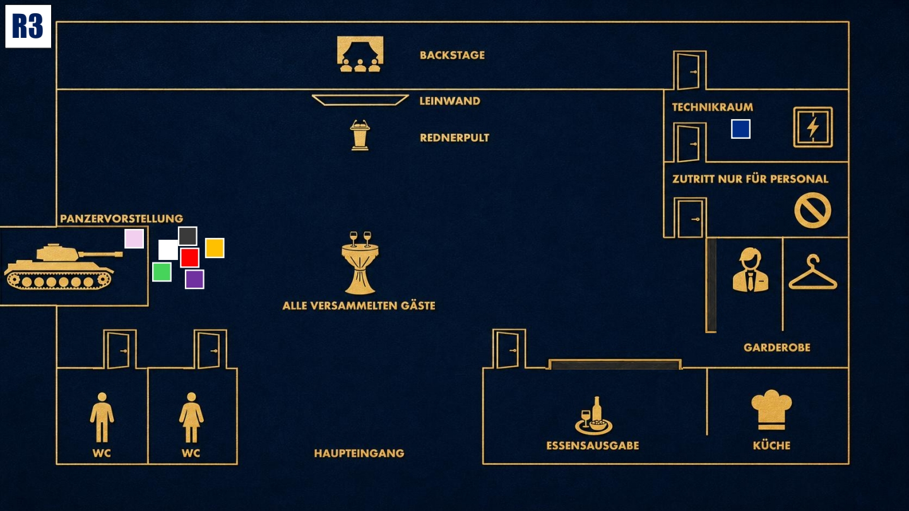

Konfrontation
Der Moment der Wahrheit. Geheimnisse kommen ans Licht. Nutze alles, was du weißt.

Das Ziel der dritten Runde
Du hast jahrelang auf diesen Moment hingearbeitet. Jake soll fallen, weil ihn die Wahrheit endlich einholt. Sorge dafür, dass Jake am Ende als Täter dasteht, egal was heute noch ans Licht kommt.
Deine Ausgangslage
Du willst Jake endgültig zu Fall bringen. Coles Tod stört dich nicht, denn er hat gegen euch statt gegen Jake ermittelt und damit euren Plan gefährdet.
Jetzt darf Eric dich nicht mit dem Sicherungskasten in Verbindung bringen. Lenke den Verdacht auf Jake und mach klar, dass seine Vergangenheit ein starkes Motiv für den Mord sein könnte.
Deine Geheimnisse
1. Die Rache: Jahrelang war es dein Plan, den Mörder deines Mentors, Javier Silva, zu Fall zu bringen. Du wolltest ihn nicht einfach töten, sondern ihm alles nehmen, was ihm wichtig ist.
2. Eiskalte Entschlossenheit: Du hast herausgefunden, dass Cole euch in den Rücken gefallen ist und gegen euch statt gegen Jake ermittelt hat. Sein Tod stört dich deshalb nicht, denn Cole wollte euren Plan gefährden.
Deine Mission
1. Schuldzuweisung: Wenn Eric dich wegen des Sicherungskastens beschuldigt, behaupte, du hättest dort nach dem Rechten gesehen, weil du Jake dort hast wegschleichen sehen.
2. Das letzte Wort: Gib Jake zu verstehen, dass er heute alles verlieren wird, genau wie Michael damals seine Familie verlor.
Deine Erinnerung an 19.40 Uhr

Zum Vergrößern tippen
Der Blackout muss stattfinden. Als du Eric nicht vertraust, übernimmst du selbst die Kontrolle im Technikraum und sorgst für die Dunkelheit, während die anderen bei der Präsentation sind.
Mögliche Fragen
An Michael: „Was würde dein Vater wohl heute sagen, wenn er noch am Leben wäre?“
An Jake: „Was wiegt schwerer, Jake? Deine Taten von vor 30 Jahren oder der Mord von heute Nacht?“